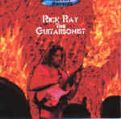

| Artist: | Rick Ray |
| Title: | The Guitarsonist |
| Label: | Neurosis Records |
| Length(s): | 68 minutes |
| Year(s) of release: | 2002 |
| Month of review: | [04/2002] |
| 1) | The Guitarsonist | 7.08 |
| 2) | Psycho Sam | 5.56 |
| 3) | Kill Max Kill | 5.15 |
| 4) | Dance Floor King | 3.15 |
| 5) | Mr. Cooper | 6.01 |
| 6) | Caution Flammable | 3.35 |
| 7) | Domestic Terrorism | 6.19 |
| 8) | Dance Of The Particles | 2.03 |
| 9) | The Weasles Bite | 3.08 |
| 10) | We All Fall Down | 2.56 |
| 11) | Of Your Own Design | 3.22 |
| 12) | Guitaren't You Surprised | 2.52 |
| 13) | The Battlefield | 4.13 |
| 14) | The Climb From Sheol | 2.27 |
| 15) | Out In The Street | 5.36 |
| 16) | I'm Sorry | 3.40 |
Dance Floor King opens in stop-start fashion, but gets to be more fluent later on. The soli is a noisy one, but if you listen closely you can hear the acoustic guitar that is stringed right through. Very nice. One of the highlights on the album is Mr. Cooper. The combination of melancholic vocals and tghe emotion in the guitar after a dreamy acoustic beginning comes out very well. The long atmospheric shards of guitar at the end are also nice.
Caution Flammable features a lot of keyboards (certainly compared to the usual amount of keyboards in Ray's music). The guitar is a bit echoey. What I also like about this one, is that the programmed drums do not want to sound like real drums that much, so it is also not that apparent that they fall short in that respect.
Domestic Terrorism features Ray's lyrics which are often political statements of some kind. As can be read in the booklets, he is very much inspired by Jesus Christ and his stories are often against government imposed restraints.
Dance Of The Particles is short, dark and rough. This contrasts nicely with the fast melodic rock of The Weasles Bite. The vocal part is a bit too much like stomp, but okay. We All Fall Down is not very typical with its Fender Rhodes dominated keyboard sound and the very jazzy feel. Of Your Own Design is repetitive and dissonant with a pointed guitar solo. The soundscapes of Guitaren't You Surprised are indeed surprising. Afterwards Rick takes revenge by a tearing guitar solo.
Also surprising the thematic approach on The Battlefield with its melodic clarinet (instead of the usual meandering type). The vocals are bouncy and a bit simple though. The Climb From Sheol is another highpoint with its ethereal, yet crackly sound. The guitar gets rough later on.
Out In The Street is jazzy again, but only in the beginning, because the tempo is upped and we get some steaming rock. I'm Sorry is the melodic acoustic closer. A strong ending to this extremely varied album.